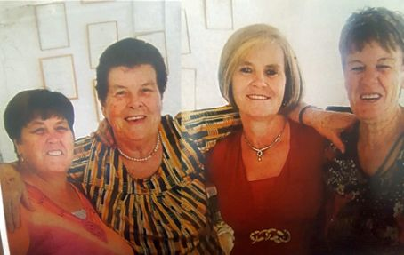

|
Die elf kinders van a2.b1.c6.d8.e8. Johannes Stephanus Henning *20-1-1909 en sy vrou Aletta Johanna (gebore Hoffman) *23-7-1913. Agter: Frederik Johannes (Freddie) *1935, Francious Daniël Hoffman (Hoffie) *1936, Elizabeth Magdalena (Lientjie) *1939, Catharina Susanna (Rita) *1938 met Petronella (Nella) *1953 op haar heup. Middel: Johannes Stephanus (Johan) *1941, Alta *1949, Daniel Albertus Cornelius (Henning) *1943, Pieter Oelof (Piet) *1944. Voor: Gideon Gerhardus (Bill) *1951 en Andries Gustav (Poen) *1946
Beskou lys van mense op foto
|
 |
Die vier dogters van a2.b1.c6.d8.e8. Johannes Stephanus Henning *20-1-1909 en sy vrou, Aletta Johanna (gebore Hoffman), v.l.n.r: Alta (f9) *25-4-1949, getroud Le Roux ; Catharina Susanna (Rita) (f3) *29-4-1938, getroud Pace; Petronella (Nella)(f11) *13-1-1953, getroud Welgemoed en daarna Willemse; Elizabeth Magdalena (Lientjie)(f4) *23-8-1939, getroud Pretorius
Beskou lys van mense op foto